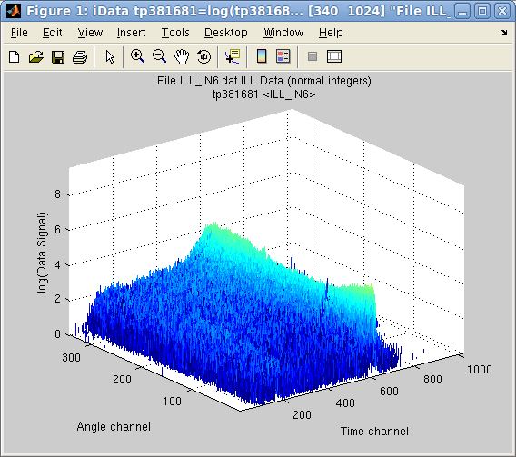
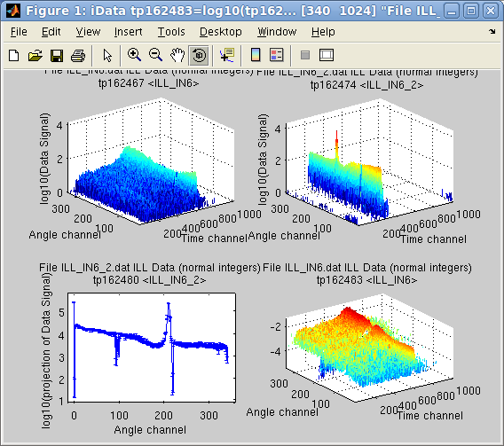
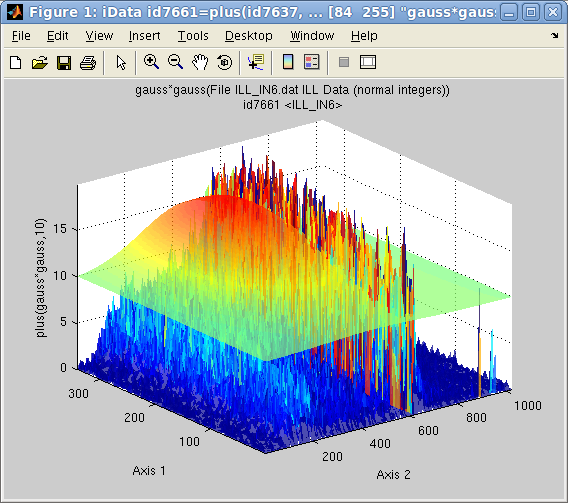

iFit: a quick start/tutorial
- Starting
- Load/import data
- Axes and Aliases
- Display objects
- Mathematical operators
- Advanced Math operators: interpolation,
catenating, fitting
- Saving your work
Commands we use in this page: iData, doc, plot, subplot, fits,
saveas
In this document, we demonstrate shortly how to use the iFit library, which mainly manipulates iData objects.
The object of these tools is to
- import transparently data files, whatever be their format [Load]
- organize the data files contents, and in particular define their
axes if needed [iData axes and aliases]
- display/plot the data [Plot]
- apply mathematical operations [Math]
- fit multi parameter models onto data sets [Fit]
- save results transparently into some common scientific formats [Save]
Each of these tasks has dedicated, detailed, documentation, as shown in
links above.
Currently, iFit depends on a Matlab installation, and we assume that
IFit has been installed properly before. If no, please refer to the Install page. Then we start Matlab, and
declare the iFit library location.
$ matlab % start Matlab (or click its icon)
>> addpath(genpath('/path/to/iFit')) % declare the iFit library location so that we can use it
>> doc(iData) % open the iFit/iData documentation (if you feel like reading it)
We are ready to work. For the purpose of this tutorial, we shall handle
some 1D and 2D example data sets.
Load/import data
Let's import a file from the iFit example
data
files. This is done by converting a character string, assumed to be
a file name, as an iData object:
>> a = iData([ ifitpath 'Data/ILL_IN6.dat' ]);
which is a neutron scattering signal by a liquid, collected by the
instrument IN6@ILL. Importation also works across the Internet with http:// and ftp:// file specifications, as well
as with compressed contents. A file selector pops-up when the file name
is given as '' (empty
string). The result of the importation is an iData
object:
>> a
a = iData object:
[Tag] [Dimension] [Title] [Last command] [Label]
tp574029 [340 1024] 'File ILL_IN6.dat ILL Data (n...' tp574029=load(iData,...
We may inquire the contents of that object with the get method
>> get(a)
>> disp(a)
which interestingly indicates that a Signal
has been defined (by default the largest numerical block in the
object). This Signal is an Alias
which points to the Data area of the object, and more specifically in
this case to the
Data.IIIIIIIIIIIIIIIIIIIIIIIIIIIII_13 section. The naming of the
section has been determined automatically from the file comments. The
Signal may be re-assigned any time, as well as possible axes attached.
This common mechanism uses the Alias
feature
of
the iData object.
The axes of the IN6 signal are related to a neutron detection time, and
an angle w.r.t the direct beam. We thus define the labels for these two
axes:
>> xlabel(a, 'Time channel'); % 2nd axis (columns)
>> ylabel(a, 'Angle channel');% 1st axis (rows)
which depends on the convention used to represent matrices. In Matlab,
matrices are stored in column-major order, that is first axis is a row,
within which elements are stored along columns: Signal(row, column). As the 'X'
axis usually refers to the horizontal one for a 2D signal
(matrix), it thus relates to columns, that is the second dimension. The
'Y' axis is vertical, and relates to rows, that is first dimension.
Some of the importable file formats make it easy to find the Signal,
and its corresponding axes. But other formats may contain many
numerical blocks within which none appears de facto as The Signal. This is the
same for axes. Then, the Signal and axes may be redefined in order to
match the user requirements.
The concepts of Alias, Signal and Axes are of major importance,
especially as they impact the way mathematical operators apply onto
objects, and their rendering in plots.
Display objects
In
order
to
display the object contents, that is its Signal as a function
of axes, possibly weighted by a Monitor, a single command can be used
independently of the data set dimensionality.
>> plot(a)
but as, in this case, the Signal contains a single large value well
above the interesting stuff, we may simply ask to display the object in
log10 scale.
>> plot(log10(a))
It is also possible to display more than one object overlayed onto a
single plot, or side by side in the same window.
Mathematical operators
A large set of mathematical operators can be applied on iData objects,
and may be used to correct/analyze the Signal. Whenever the Signal or
the axes are changed (by value or definition), the operator result will
change accordingly. This way it is possible to define a series of
operations for data processing, independently of the data files
representation.
Let's import a second IN6 data file, and set its axes labels as for the
first object.
>> b = iData([ ifitpath 'Data/ILL_IN6_2.dat' ]);
>> xlabel(b, 'Time channel'); % 2nd axis (columns)
>> ylabel(b, 'Angle channel');% 1st axis (rows)
Then
we
may
obtain the projection of this object onto the first dimension
'Angle', as a new object. Then we normalize the first object 'a' by
this projection, and plot the two initial data file contents, the
projection of the second onto the Angle axis, and the normalization of
the first object by this projection.
>> c = camproj(b)
>> subplot(log10([a b c a./c ]))
In the latter command, the log10 applies onto the vector of
the 4 objects. Also, the division is made element by element with the
./ operator and the projection c
(1D signal) is extended to a 2D object
in order to perform the division.
All binary operators can cope with objects that may have partly
overlapping axes, possibly with different binning, and of different
dimensionality. This is done transparently.
Also, the Error estimates associated to the Signal are
propagated, assuming distributions are Gaussians.
Advanced Math operators: interpolation,
catenating, fitting
The interpolation of an object onto a new set of axes is done
transparently, whatever be the object dimensionality. An object
rebinning is obtained by interpolating the object on its own axes, or a
sub-set of it:
>> d = interp(a, 1/4); % rebin by dividing the length of axes by 4
Adjusting
a function-model onto an object is easy, in order to
determine the best parameter set that describes the Signal/Monitor. The fitting
procedure makes sure that the model matches the object dimensionality,
and extends it if needed.
>> d(find(d>200))=0; % first remove a large peak on the side
>> [pars,criteria,message,output] = fits(d); % fit with the default Gaussian model, extended to 2D
>> plot(log10([d output.modelValue*10]),'tight')
Any object can be cut into slices, or assembled with other objects to
create a higher
dimension object. The following command puts multiplications of the
previous object side by side in order to create a 3D volume.
>> e = cat(3, [d d*2 d*10 d*5 d*2 d])
Saving your work
Any object can be exported to a large number of file formats. Some of
these formats retain most of the object information, while other
formats are much more restrictive.
To save your work simply specify the object, a file name (or empty) and
optionally a file format (which can also be set from the file name
extension).
>> save(a, '', 'svg')
The recommended formats are Matlab MAT, HDF5, SVG, PDF, PNG, Matlab M and flat DAT.
E.
Farhi - iFit/quick start -
$Date: 2013-05-14 17:58:05 +0200 (Tue, 14 May 2013) $ $Revision: 1035 $
-
back to
Main
iFit Page